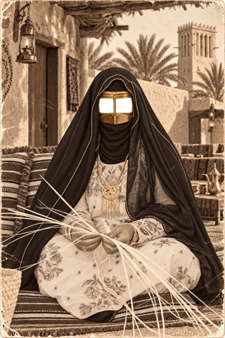

THE HERITAGE PORTRAIT EXPERIENCE
Choose your portrait.
Tap a portrait to begin. Then look straight at the camera.
Preparing your portrait…
THE MISRAH PHOTO EXPERIENCE
Choose a portrait. Look at the camera.
Take home a little piece of history.
Preparing your experience…

THE HERITAGE PORTRAIT EXPERIENCE
Tap a portrait to begin. Then look straight at the camera.